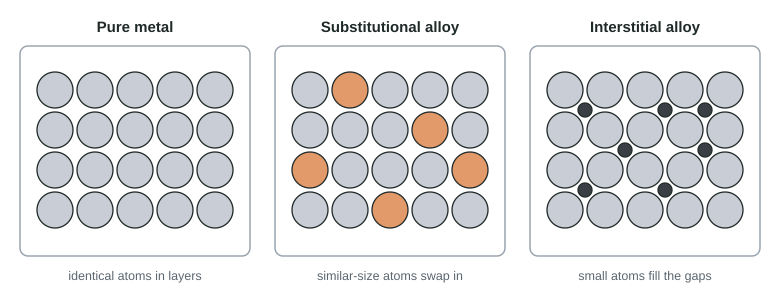

Structure of Metals and Alloys
In a metallic solid, cations sit in a sea of delocalized electrons.
Part 1 · Hook
Why this matters
Part 2 · Before you start
What this builds on
Part 3 · Prerequisite check
Quick check before you start
1. In metallic bonding, what holds the metal cations together?
- A sea of delocalized valence electrons
- Anions placed between the cations
- Shared pairs between each two neighboring atoms
- Gravity between the heavy nuclei
Show the answer
The cations attract the electron sea that moves among them.
- Correct: A sea of delocalized valence electrons:
- Anions placed between the cations:
- Shared pairs between each two neighboring atoms:
- Gravity between the heavy nuclei:
2. Why does an ionic crystal shatter when struck?
- A shifted layer puts like charges next to each other, and they repel
- Its bonds are weak
- Its electrons fly off
- It contains molecules that break apart
Show the answer
In the shifted lattice, cations face cations and anions face anions.
- Correct: A shifted layer puts like charges next to each other, and they repel:
- Its bonds are weak:
- Its electrons fly off:
- It contains molecules that break apart:
3. Going down a group, atomic radius
- increases, because electrons occupy more shells
- decreases, because the nuclear charge grows
- stays the same
- increases, because the atoms get heavier
Show the answer
Each period down adds a shell, so the valence electrons are farther from the nucleus.
- Correct: increases, because electrons occupy more shells:
- decreases, because the nuclear charge grows:
- stays the same:
- increases, because the atoms get heavier:
Part 4 · See it
See it first

Part 5 · Step by step
How it works, step by step
- Metal atoms release their valence electrons into a shared seaa metallic solid forms: cations held by delocalized electrons
- The delocalized electrons can move through the whole solidmetals conduct electricity and heat well
- When layers of cations slide, the electron sea moves with themthe bonding is kept, so metals are malleable and ductile instead of brittle
- Added atoms of similar size replace host atomsa substitutional alloy forms, usually a little harder than the pure metal
- Much smaller added atoms sit in the gaps and block the layers from slidingan interstitial alloy forms, harder and less malleable
Part 6 · Key ideas
Key ideas
- A metallic solid is cations in a sea of delocalized electrons, which conduct electricity and heat.
- Metals are malleable and ductile: layers slide while the electron sea keeps surrounding each cation.
- An alloy is a mixture of a metal with other elements that keeps metallic bonding.
- In a substitutional alloy the added atoms are about the same size as the host atoms and take their places (brass).
- In an interstitial alloy much smaller atoms fill the gaps, pinning the layers: harder, less malleable (steel).
Part 7 · Misconception
A common mistake
The wrong idea: Any element whose atoms are smaller than the host metal's atoms forms an interstitial alloy.
What actually happens: The gaps between metal atoms are much smaller than the atoms themselves. Only atoms far smaller than the host, such as C, N or B in iron, fit there. Atoms of similar size, even if a bit smaller, take the host atoms' places: a substitutional alloy.
Part 8 · Check yourself
Check yourself
Exam-style questions. Anything you miss goes into your review queue.
Particle view
Iron and two of its alloys
1. Which box represents an interstitial alloy?
- Box W
- Box X
- Box Y
- Box W and Box Y
Show the answer
In an interstitial alloy, much smaller atoms (here carbon) fit into the gaps between the larger metal atoms, which stay in their usual places. Box X shows that: steel.
- Box W: Box W is pure iron: one kind of atom only.
- Correct: Box X: Right: small atoms in the holes of the iron lattice.
- Box Y: In Box Y the second element's atoms take the places of iron atoms; that is a substitutional alloy.
- Box W and Box Y: Box W is a pure metal and Box Y is substitutional; neither has atoms in the gaps.
2. Which element is most likely the second metal in Box Y? (Radii: Fe 126 pm, Cr 128 pm, Ca 197 pm, K 227 pm, B 84 pm)
- Calcium, Ca
- Potassium, K
- Boron, B
- Chromium, Cr
Show the answer
A substitutional alloy forms when the added atoms are about the same size as the host atoms, so they can take their places in the lattice. Cr (128 pm) is almost the same size as Fe (126 pm); stainless steel contains chromium this way.
- Calcium, Ca: Ca (197 pm) is far larger than Fe, so it does not fit in an iron atom's place.
- Potassium, K: K (227 pm) is far too large to replace Fe in its lattice.
- Boron, B: B (84 pm) is much smaller than Fe; small atoms fit between the iron atoms instead, as in Box X.
- Correct: Chromium, Cr: Right: nearly the same radius as Fe.
3. The material in Box X is harder and less malleable than the material in Box W. Which explanation is best?
- Carbon atoms in the gaps block the iron layers from sliding past each other
- The carbon atoms take electrons from the sea, so fewer electrons hold iron together
- The carbon atoms make the iron atoms larger, so the iron atoms pack more tightly
- Carbon is a nonmetal, so its atoms form ionic bonds with the iron atoms
Show the answer
A metal bends because its layers of atoms can slide past one another, with the electron sea holding them together throughout. Small atoms wedged between the layers act like pins: the layers catch on them and resist sliding. The metal becomes harder, stronger and less malleable.
- Correct: Carbon atoms in the gaps block the iron layers from sliding past each other: Right: the interstitial atoms block the layers from sliding.
- The carbon atoms take electrons from the sea, so fewer electrons hold iron together: The harder alloy is still held by metallic bonding; the change comes from the atoms blocking movement, not from fewer electrons.
- The carbon atoms make the iron atoms larger, so the iron atoms pack more tightly: The carbon atoms do not change the size of the iron atoms.
- Carbon is a nonmetal, so its atoms form ionic bonds with the iron atoms: The carbon atoms sit in a metallic lattice; steel is not an ionic compound.
4. Which statements are true of all three samples in boxes W, X and Y? Select all that apply.
- They conduct electricity because they contain delocalized electrons.
- Their atoms are held together by metallic bonding.
- They are made of a single element.
- They contain atoms of two different sizes in the gaps between atoms.
Show the answer
Pure iron and both alloys are metallic solids: cations in a sea of delocalized electrons, so all three conduct and all are held by metallic bonding.
- Correct: They conduct electricity because they contain delocalized electrons.: Right: the electron sea is present in all three.
- Correct: Their atoms are held together by metallic bonding.: Right: alloys keep the metallic bonding of their main metal.
- They are made of a single element.: Only Box W is a single element; X and Y are alloys, mixtures of elements.
- They contain atoms of two different sizes in the gaps between atoms.: Only Box X has atoms in the gaps; in Y the second element replaces iron atoms.
Data table
Pure copper and two copper alloys
A student tests three annealed (heat-softened) wires of the same thickness. Hardness is on a scale where a larger number means harder to dent. The metallic radius of each element is given.
| Wire | Composition (by number of atoms) | Atomic radii (pm) | Hardness (Vickers) | Bends without breaking? |
|---|---|---|---|---|
| A | 100% Cu | Cu 128 | 50 | yes |
| B | 70% Cu, 30% Zn (brass) | Cu 128, Zn 134 | 70 | yes |
| C | 93% Cu, 7% Sn (bronze) | Cu 128, Sn 151 | 95 | yes |
5. Why can all three wires bend without breaking, unlike a crystal of an ionic solid?
- As layers slide, the electron sea still surrounds each cation, so the bonding holds
- The metals contain covalent bonds, which can bend without breaking
- Metal atoms carry no charge, so they do not repel each other when the layers move
- The wires are thin, and any thin solid bends rather than breaks
Show the answer
In a metal the cations are held by delocalized electrons that move with them. When a layer slides, each cation is still surrounded by the electron sea, so the bonding is kept. In an ionic solid a shift brings like charges together and they repel.
- Correct: As layers slide, the electron sea still surrounds each cation, so the bonding holds: Right: the electron sea follows the cations.
- The metals contain covalent bonds, which can bend without breaking: Copper and its alloys are held by metallic bonding, not covalent bonds.
- Metal atoms carry no charge, so they do not repel each other when the layers move: Metals contain cations, which would repel each other if the electron sea were not between them.
- The wires are thin, and any thin solid bends rather than breaks: A thin ionic crystal still snaps; thickness is not the reason.
6. Gold can be hammered into a sheet thin enough to see light through. Which explanation is best?
- Gold is soft because its metallic bonds are much weaker than any other bonds
- Its layers of atoms slide past each other while the electron sea holds them together
- Gold atoms are very large, so there is a lot of empty space for them to move into
- Each gold atom is bonded to just one neighbor, so the atoms are free to move about
Show the answer
Malleability comes from layers sliding without breaking the metallic bond: the delocalized electrons surround the cations wherever they move.
- Gold is soft because its metallic bonds are much weaker than any other bonds: Gold melts at over 1000 °C, so its bonding is not weak; it is malleable because its layers can slide.
- Correct: Its layers of atoms slide past each other while the electron sea holds them together: Right: sliding layers held by the electron sea.
- Gold atoms are very large, so there is a lot of empty space for them to move into: The cations are closely packed; it is sliding, not empty space, that lets the metal change shape.
- Each gold atom is bonded to just one neighbor, so the atoms are free to move about: Metallic bonding is not one bond between two atoms: each cation is attracted to the electron sea around it.
7. Steel for cutting tools is made by adding a small amount of carbon to iron. How does adding carbon change the iron?
- It becomes softer and more malleable
- It becomes harder and less malleable
- It stops conducting electricity
- It becomes brittle like an ionic solid, shattering when struck
Show the answer
Carbon atoms are small, so they sit in the gaps between iron atoms (an interstitial alloy). They block the layers from sliding, which makes the steel harder and less malleable.
- It becomes softer and more malleable: Blocking the layers makes sliding harder, not easier.
- Correct: It becomes harder and less malleable: Right: the interstitial atoms pin the layers.
- It stops conducting electricity: Steel is still metallic and still has delocalized electrons, so it conducts.
- It becomes brittle like an ionic solid, shattering when struck: Steel is harder but still a metal; it bends before it breaks, unlike an ionic crystal.
Part 9 · Summary
Summary
Part 10 · Up next
What comes next
Part 11 · Connections